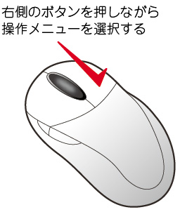
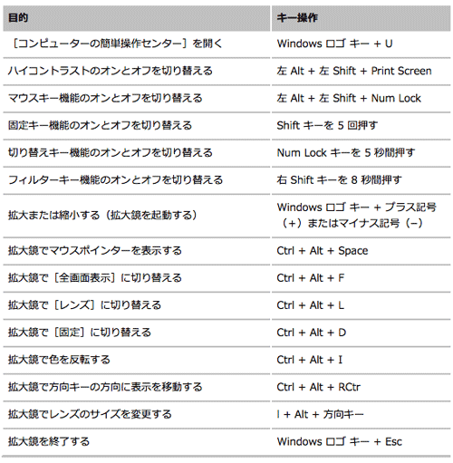

パソコンを使う
マウスの操作
クリック
- マウスボタンを押して離す
ダブルクリック
- マウスボタンを押して離すことを２回つづける
ドラッグ
- マウスボタンを押したまま、選択したいモノを外側から囲む
ドラッグ＆ドロップ
- マウスボタンを押しながら「ドラッグ」で移動し、目的の場所で離す。
右クリック（コンテクストメニュー）

デスクトップの操作
デスクトップの使い方
デスクトップでやることの最も多い操作は、以下の２つです。
- デスクトップに新規フォルダーをつくる
- ファイルを別のフォルダーに移動する
ウィンドウの使い方
キーボードの使い方
基本ショートカットキー
この３つは、データが必ず「クリップボード」に一時的に格納されます。
そのデータを利用することになります。
コンピューターのキーボード ショートカット

デスクトップ・ウィンドウの操作で使用するキー
ダイアログ ボックスのオプションまたはボタンのコマンドを実行する。
ダイアログ ボックスのテキスト入力フィールドを移動する。
最も使用頻度の高いのは、開いているアプリケーションからデスクトップに移動するときです。
Windows ロゴ キー + D
日本語を入力する場合
注意したいのは、- 「半角カタカナ」は絶対に使用しない
- 丸数字や（株）などの略文字は使用しない
欧文を入力する場合
HTMLの入力も含め、欧文を入力するときに必要なキーの位置を憶えましょう。「”（ダブルクォート）」
「'（シングルクォート）」
「@（アットマーク）」
「;（セミコロン）」
「:（コロン）」

「*（アスタリスク）」
「_（アンダースコア）」
の位置は必ず覚えるようにしましょう。